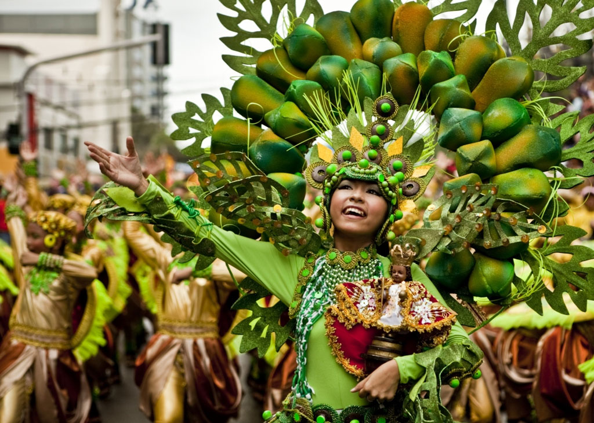

CELEBRATION OF FAITH. Sinulog celebrates the Cebuanos' Catholic faith and honors the Santo Niño or the Holy Child Jesus with a dance spectacle on the streets of Cebu City. (Photo by Mikhael Arrogante used with permission from the Sinulog Foundation)
Sinulog showcases Cebuano culture
It is a celebration both solemn and festive, this festival of festivals celebrated with pomp and pageantry yearly in Cebu City. Cebu’s Sinulog, a month-long festivity highlighted by religious processions and a dance extravaganza every third week of January, is a showcase of Cebuano faith and ingenuity.
The Sinulog Festival is in honor of the Santo Nino or the Child Jesus, who is represented by an image that devotees consider miraculous.
Like the Cebuanos, the Santo Nino image that now resides in the county’s oldest church, the Basilica Minore del Sto. Nino in Cebu City, has a rich and colourful past intricately woven into this island’s Catholic roots.
History
The Sto. Nino image is believed to be the same one given by Portuguese explorer Ferdinand Magellan to Hara Amihan of Sugbo, Cebu’s old name, on the occasion of her and her husband Rajah Humabon’s baptism into the Christian faith.
How the image survived or what happened to it in the 44 years between Magellan’s death at the hands of a native chieftain in 1521 and the arrival of Spanish conquistador Miguel Lopez de Legazpi in Cebu in 1565 remains unclear, but during those dark times in Cebu’s history, it is believed that the merging of a people’s pagan past and its Christian present came to happen.
Cebuano historians say the Sinulog steps, a two-step forward, one-step backward rhythm performed to the beat of the drums, mimic the current (sulog) of Cebu’s Pahina River and the dance was used during pagan rituals to venerate wooden idols.
It was not clear when but it is believed that the Sto. Nino became an additional object of veneration for Cebuanos up until Legazpi’s coming when Spanish colonization of the Philippines began in Cebu and the Catholic faith was preached in earnest. Corroborating this belief is where the image was found by Juan Camus, one of Legazpi’s soldiers: inside a wooden box lying side by side with native idols.
Evolution
The evolution of a few simple dance steps into today’s multi-million-peso Grand Parade production is a feat of Cebuano creativity and innovation and started with the man considered as the father of Sinulog, retired customs collector David Odilao.
Odilao was behind the first parade in 1980 with only students as participants. The students though were garbed in colourful outfits and danced the Sinulog to the beat of the drums as they went around the basilica.
The event highlighted a long-standing Cebuano tradition to offer prayers of thanks or intercession to the Santo Nino through the Sinug dance of the candle vendors at the basilica and caught the attention of the City Government under Mayor Florentino Solon.
STREET DANCING. Contingents from all over the country join the Sinulog grand parade held every 3rd Sunday of January. On that day, the downtown and midtown areas of Cebu City are closed to vehicle traffic as dancers and revelers take over the streets. (Photo by Manly Cardinez used with permission from the Sinulog Foundation)
Festival of festivals
With the help of civic and other groups, the City Government started the transformation of Cebu’s Sinulog into a festival to rival other festivals being held in the country.
Fast forward to the 21st century and the Sinulog Festival has become a month-long celebration highlighted by a 10-hour extravaganza of faith through dance held every third Sunday of January to coincide with the Santo Nino fiesta.
Today, the street dancing and the solemn procession of the Santo Nino image held the day before it count among Cebu’s top tourist attractions, each event drawing a crowd of about a million people. One other event just as important is the fluvial parade to reunite the image of the Santo Nino with that of his foster father at the St. Joseph Parish in Mandaue City and his mother at the Virgen de Regla Parish in Lapu-Lapu City.
Culture
Beyond its splendor and gaiety, the Sinulog has come to represent a people and a culture, said Sinulog Foundation executive director Ricky Ballesteros.
"Sinulog is synonymous with Cebu and the Cebuanos. It gives us a name. When you say Cebu, you think Sinulog. When you say Sinulog, you think Cebu," said Ballesteros.
From its humble beginnings in 1980, the Sinulog Festival has grown over and above a single individual or group to become the pride and responsibility of all Cebuanos.
Through it, the Cebuanos truly move to one beat and follow one vision.